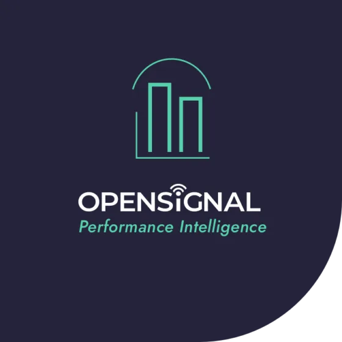

Opensignal · Product Design Lead · 2016–2021
What I owned: Product discovery, prioritisation (RICE), information architecture, and strategic direction for a 4-product platform serving 4 distinct audiences (C-suite, CTO, marketing, field engineers). Direct line to the SVP of Products through hypergrowth (20 to 300 people) and acquisition.
Opensignal collects billions of mobile network measurements weekly from consumer apps like Meteor. The B2B business monetised this data by selling analytics to telecom operators, Vodafone, AT&T, Free, EE and others. But the company's ambition was bigger: shift from being a data vendor to being a competitive intelligence partner.
In 2017–2018, the strategy moved from public reports to a SaaS platform model. I led product discovery and drove the platform build during hypergrowth, from 20 to 300 employees, through to acquisition, with no established product process and direct accountability to the SVP of Products.
The challenge: each audience within a telecom operator had fundamentally different questions, technical literacy, and decision-making contexts, but they all needed to trust the same underlying data.
I made the early call that this couldn't be one dashboard with permission levels. The C-suite and the engineering team don't just have different access needs, they have entirely different relationships with the data. Building one product for both would serve neither.
Executives want a 30-second answer: "How does my network rank against competitors, and is our position improving or declining?"

Engineers want deep decomposition: break speed into peak speed, consistency, time-of-day patterns, regional distribution.
Telecom analytics tools at the time were either internal engineering platforms, technically powerful but inaccessible to non-technical stakeholders, or lightweight competitive reports with no analytical depth. Nothing bridged executive decision-making and engineering diagnostics in one coherent platform.
That gap was the strategic opportunity. The pivot from data delivery to competitive intelligence meant the product had to do something none of the competition had attempted: make complex network data genuinely useful to business leaders, not just engineers.
With four products serving distinct audiences, prioritisation was the hardest ongoing challenge. I used a two-axis framework: client value (how much business impact for telecom operators, and how directly it served the intelligence-vs-data positioning) against engineering effort. The goal was to find the decisions that moved the strategic pivot forward fastest.
Two-axis framework: client value vs. engineering effort. Executive overview and ranking trends shipped first, fast to build, immediately differentiating in demos.
The executive overview and ranking trends went first, fast to build, immediately differentiating in sales demos. Regional drill-down and the shared component library were the bigger bets: higher effort but essential for the platform to feel like one coherent product family rather than disconnected tools.
I didn't wait for briefs. I ran user research directly with telecom operators, learned the analytical mental models from internal data scientists, and used structured frameworks (RICE) to translate findings into roadmap decisions. The product direction came from that, not from top-down requirements.
Architecture before screens. The hardest problem in this product wasn't visual, it was information architecture. Opensignal's metrics are deeply complex: speed decomposes into sub-metrics, each available at national/regional/city level, across 2G/3G/4G/5G, with confidence intervals. I worked with data science teams to map every metric relationship before a single screen was designed.
One design system, two density levels. CI needed white space and large trend indicators. PI needed data-dense views with multiple chart types per screen. I owned a shared component library (charts, filters, navigation, operator colour coding) while maintaining different layout grids per product. Both feel like siblings; each respects its audience's workflow.
The core question I scoped this product around: "Where do I stand, and what's changing?" I defined an architecture that surfaced ranking positions across all key metrics with trend indicators on load, then allowed progressive disclosure into any metric. Every number included confidence intervals and methodology transparency, because C-suite users have high skepticism about data sources and low tolerance for anything that feels like a black box.
The critical business constraint: these are the buyers. They need to feel confident in the data before their CTO will sign a contract. The product had to earn their trust before it earned their usage.
"It's very rare to see telecom operators lean forward and be actively excited by a demo, however, this is the effect Malgo's design has on customers. It's certainly a level above what they're used to."
– Iain Masden, SVP Products and Solutions, Opensignal
Performance Intelligence serves a fundamentally different workflow: CTOs and network engineers decomposing metrics to find root causes. The question I scoped this product around: "Our video experience dropped in Region X, is it a capacity issue, a throttling policy, or a specific CDN?"
I defined a product that supported analytical storytelling, users build a narrative by drilling into data across dimensions. Linked charts that update in context, time-of-day patterns, distribution views, geographic breakdowns. The guiding principle I set: density without confusion. Every screen is data-rich, but the hierarchy is clear.
Prototype-as-sales-tool: The Competitive Intelligence prototype didn't just validate the product internally, it became a revenue-generating asset. The sales team used it to close enterprise deals before engineering had built the product. This was a deliberate strategy: invest in prototype fidelity early to compress the sales cycle.
Cross-product coherence: With four products serving distinct audiences, I owned the design system that kept them feeling like one platform, shared components, consistent interaction patterns, unified operator colour coding. This mattered commercially: operators expected a cohesive intelligence suite, not a collection of separate tools.
Scaling through hypergrowth: As the company grew from 20 to 300 employees and through acquisition, I maintained product quality and kept the discovery-led culture intact. That meant setting standards, building shared systems, and making deliberate calls about what not to build.
Prototypes directly contributed to enterprise sales, operators signed before the platform was built.
Coherent platform family serving C-suite, engineering, marketing, and brand partnership audiences.
Maintained product quality and discovery culture through hypergrowth to acquisition.
Opensignal repositioned from data vendor to competitive intelligence partner, the product was the proof point.
I'd push for direct user research access earlier. Due to the seniority and scarcity of our target users (C-level telecom executives), we relied heavily on internal consultants as proxies for much of the discovery work. That created gaps we only discovered later.
I'd also advocate for a unified analytics layer across all four products from the start. Each evolved somewhat independently, and building cross-product consistency retrospectively was harder and slower than designing for it from day one.